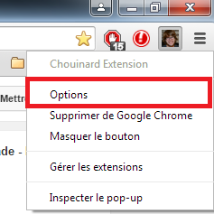
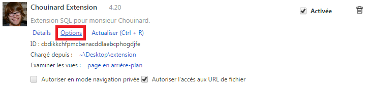

Le coeur d'une extension Google Chrome est le fichier "manifest.json" qui se situe à la racine du projet. Ce fichier ne peut pas être appelé autrement et contient toutes les informations permettant l'exécution de l'application. Ce fichier contient, entre autres, le nom de l'extension, sa version, sa description et son icône qui seront affichés dans le menu des extensions sur le navigateur. On y retrouve aussi la version du "manifest". La version du "manifest" doit être 2 si on veut l'exporter sur Google Chrome, puisque le navigateur ne supporte plus les extensions de la version 1. La différence entre les deux versions est le nom des propriétés (ex : "background_page" est maintenant "background"), des changements pour la sécurité, des changements sur les actions des onglets et du navigateur, etc. Le fichier "manifest" contient aussi les permissions que notre extension va voir, tel que "storage", pour permettre de stocker des données, ou bien "tabs", pour pouvoir jouer avec les onglets. Il y a aussi la propriété qui définit la page d'option qui est en fait une page HTML que l'on fait et qui s'ouvrira quand on cliquera sur "Options" vis-à-vis notre application dans le menu des extensions et qui permettra de changer certains paramètres au choix. Une autre propriété intéressante du "manifest" est "background" qui permet de faire rouler des scripts en arrière-plan. Finalement, nous avons utilisé la propriété "default_popup" pour définir le pop-up (page HTML) qui s'affichera lorsqu'on clique sur l'icône de notre extension dans le navigateur. Il existe des dizaines d'autres propriétés, nous avons présenté brièvement celles que nous avons utilisé. Voici un exemple simple de comment sont structurées les données dans le fichier "manifest" :
{
"name": "Extension incroyable",
"manifest_version": 2,
"description": "Extension SQL pour monsieur Chouinard.",
"version": "1.2.3.4"
}
Comme dit un peu plus haut, la page d'option est une page HTML qui s'ouvrira en cliquant ici :
Ou bien là :
Cette page contient ce que l'on veut. Généralement elle contient des champs texte, des listes déroulantes et un bouton "Sauvegarder" en bas comme toute bonne page d'option. Pour mettre un page d'option, il ne suffisait que d'écrire ceci dans le "manifest.json" :
"options_page": "options.html"
Une application peut avoir des scripts qui s'exécutent en permanence en arrière-plan. On décide des scripts que l'on veut faire rouler dans le "manifest.json" comme ceci :
"background":
{
"scripts": ["exemple.js"]
}
"Mousetrap" est une librairie qui nous été très utile pour gérer les raccourcis clavier en JavaScript dans notre extension. Tout ce qu'il faut faire, c'est télécharger le fichier "mousetrap.js" sur le site et le mettre avec les autres scripts. Ensuite, on peut lier les raccourcis clavier à des fonctions JavaScript comme suit :
Mousetrap.bind('shift+z', function(e)
{
alert("exemple");
}
Ceci est une fonctionnalité qui se rapproche des "cookies", on stocke des données localement dans le navigateur. Elle est très simple d'utilisation et nous a été très utile. Pour enregistrer une chaîne de caractères, il faut une clé pour retrouver l'information par la suite et, bien sûr une chaîne caractères. Voici comment on stocke le mot "onglet" :
localStorage.setItem("myKey", "onglet");
var data = localStorage.getItem("myKey");
Ceci est une technologie ayant le même principe que "local storage", sauf que cette dernière se réinitialise quand le navigateur se ferme. "Chrome storage" garde les éléments en mémoire tant qu'on ne les supprime pas. Pour enregistrer un élément, on fait comme suit :
chrome.storage.sync.set({ "myKey" : "exemple" });
chrome.storage.sync.get("myKey", function(items) {
//Code
});
Le JavaScript est un langage "monothread", donc une opération de longue durée peut empêcher d'autres processus de s'exécuter. Pour résoudre le problème, on utilise les "callback" dont on a parlé un peu plus haut. Cela peut facilement rendre la programmation très complexe. Nous avons dû apprendre comment gérer cette façon de faire que nous n'avions jamais vue auparavant. Soit l'exemple suivant :
console.log("1");
chrome.storage.sync.get("myKey", function(items) {
console.log("2");
});
console.log("3");